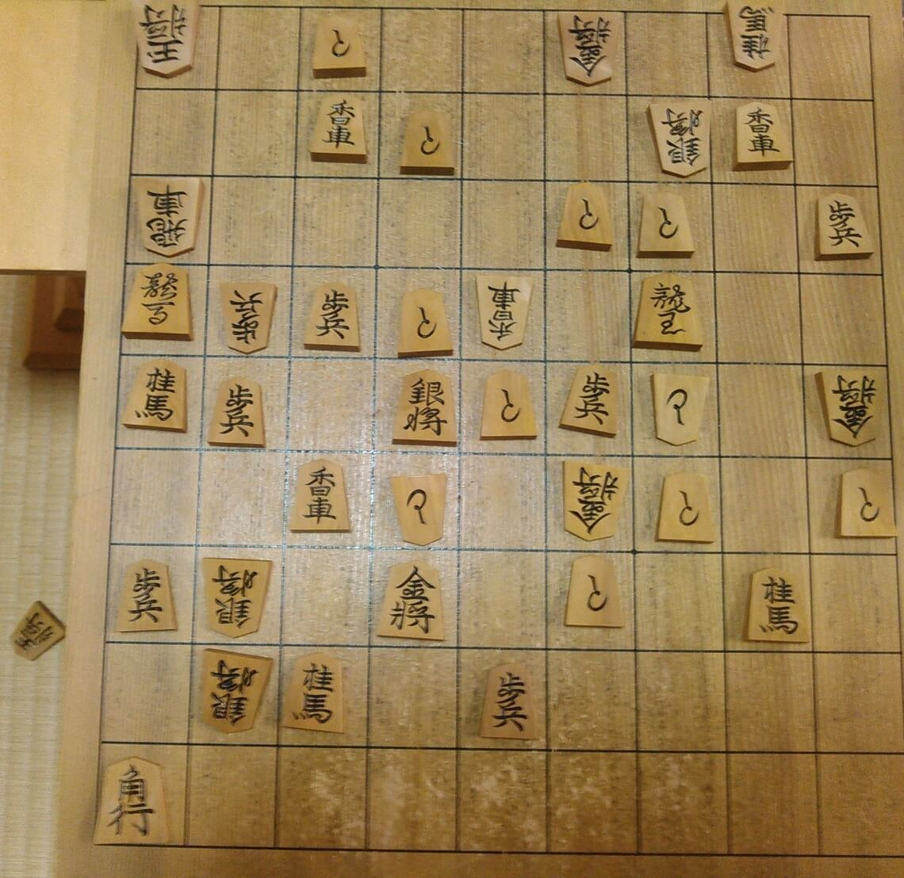
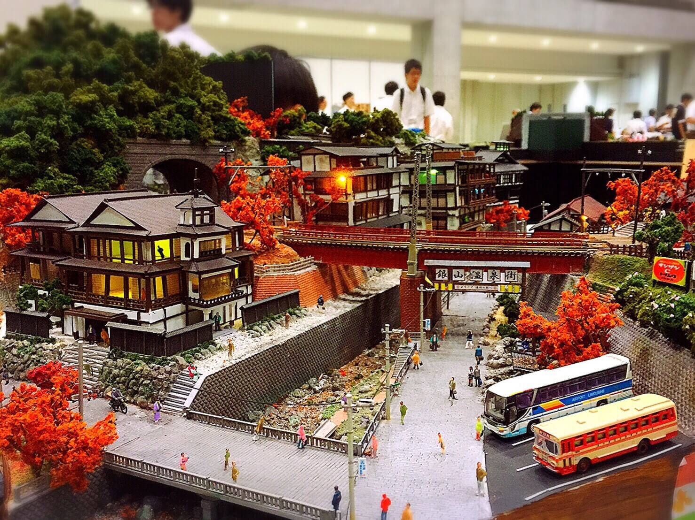

その他展示
同好会等による活動紹介、制作物の展示を行う予定です．
将棋部

場所：1I教室初心者の方、腕に自信のある方、どなたでも大歓迎！！
部員との対局や詰将棋などを楽しむことができます。
また、参加してくださった方には、景品をプレゼントします。
是非、ご参加ください。
美術部
部員が日々の部活動にて、捜索した作品を展示しています。
また、マーブリングを使ったオリジナル栞作りやお絵かきコーナーもあるのでぜひ！見に来てください。
吹奏楽部
吹奏楽お祭りコンサートは、
ギャラクシーでたーのしー吹奏楽部のステージです♪*°
話題のあの曲や誰もが知るアニメの名曲など、様々な方に楽しんでいただける名曲になっています！！
また、今年の企画は聖徳太子クイズ！正解すれば景品もありますよ☆
吹奏楽好きなフレンズもそうでないフレンズも気軽にお越しください！
部員一同、第1体育館にてお待ちしています(*ˊ˘ˋ*)｡♪:*°
機械研究会


機械研究会では、模擬コンテスト受賞作品の展示、鉄道模型の運転体験などを予定しています。
ガンプラ、戦車、戦艦、フィギュアなど様々な模型を展示しています。
是非見にきてくださいネ
情報処理研究会
彼氏・彼女のいないそこのあなた！恋人探しアンケートはおたく活動に忙しいあなたに代わり、素敵な相手をマッチングします。
恋人探しアンケートは一般的な出会い系アプリと違い、魔剤の飲み過ぎで限界突破した学生や、50枚以上のレポートによって腱鞘炎になった学生など、種多様なエンジニアとマッチングされてしまいます。
（joken科展ではそれ以外にも学生の作成したゲームの展示やOSの展示などが予定されています）
クイズ研究会
実際に部活で使用しているボタンを使ってテレビ番組さながらの早押しクイズ大会（一回で6人）を行います。
クイズってちょっと難しいから‥と思っている方、安心してください。通常より易しい問題を部員全員でつくりました。
さらに優勝者には景品を用意しました。負けてしまった方にも参加賞があります。
そして何回でも参加OKです。ぜひ早押しクイズ大会に御参加してください。
現代視聴覚文化研究会
げんしけんは創作活動を主とする部活で、この高専祭ではその活動の発表の機会として会読、CD、ゲームを楽しんでもらいます。
ぜひ作品を手にとってみてください、お待ちしております！
メディアコンペティション
メディアコンペティションとは学生の自発的な取り組みの活動発表の場として各団体によるポスター展示を行っています。
今年はロボットコンテスト、プログラミングコンテスト、生協同好会などの団体が展示を行います。
ここでしか聞けない話などもあると思うのでぜひお越しください。
数学LOVE!
数学LOVE！ではおなじみのゾムツール、今年もやります。
昨年度は3種類の難易度のワークシートでゾムツールを体験させるというコーナーを設けていましたが、今年度は難易度関係なしに3種類の立体模型を作るのを体験してもらい、見事完成した方には豪華景品（？）が待っています。
また、今年度は科学の祭典奈良大会に出展しないので、ゾムツールで遊ぶことができるのは、年内はこの高専祭だけです。
是非この機会に楽しんで立体の世界にどっぷりと浸かってください！！
1年情報工学科
脱出ゲームをやっています。あなたは脱出できるかな
４年電気工学科

授業の実験で作製したものを用いたお化け屋敷です。
教室を最大限利用した全長25mのルートです。
どうぞ楽しんでいって下さい。